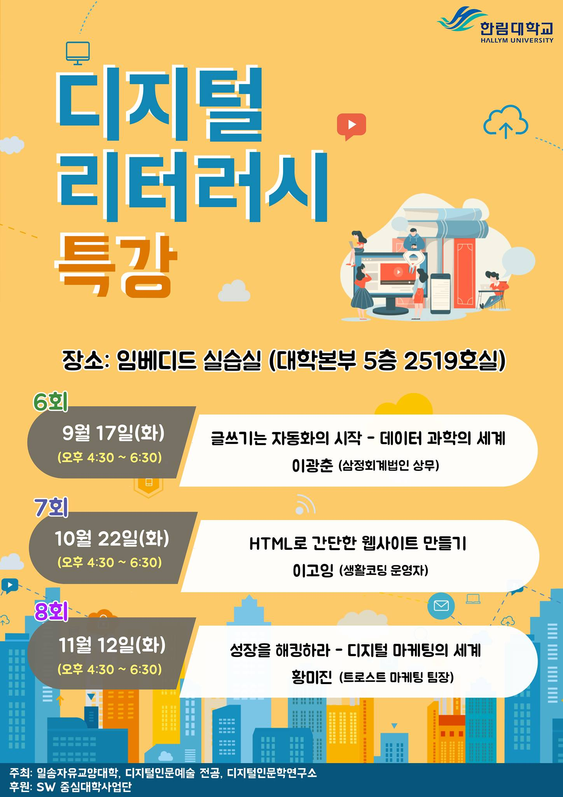

디지털 리터러시 특강
“글쓰기는 자동화의 시작 - 데이터 과학의 세계”
강사 소개
- 강사소개: 데이터 과학자 이광춘
- KPMG 데이터 과학자 / 연세대 겸임교수, “데이터 사이언스”
- “타이디버스로 향하다”, Micro Software 395호
- 데이터 사이언스 미트업 운영 / 소프트웨어 카펜트리 강사
- Cloudera Conference 2018: 설명가능한 기계학습 ]
특강 안내

특강 개요
- 강의 목차
- 전통적인 글쓰기
- 재현가능한 글쓰기
- 글쓰기 기본 교양
- API 프로그래밍
- 텍스트 마이닝: R
- 자연어 처리: Python
- 기계학습 자동화 - 시작은 글쓰기
전통적인 글쓰기 (문서)
사무자동화의 꽃 - MS 오피스
- 도전받는 데이터 사이언스 도구
- 엑셀
- 파워포인트
- 워드
- 액세스
재현가능한 글쓰기
세가지 다른 글쓰기 패러다임
데이터 과학자의 블로그

이력서
글쓰기 기본교양
텍스트 마이닝
자연어 처리
API 프로그래밍
공간정보 오픈 API
데이터도 API
- 데이터 과학: 기초 통계 - kosis와 tidycensus 비교
- xwMOOC 데이터 시각화: 국회의원 사진 - trelliscope
- xwMOOC 데이터 제품 - 슈퍼영웅(Super Heores)
ingest-data: 다양한 데이터 가져오기- 그럼 소프트웨어 API, 더 나아가 인공지능 API